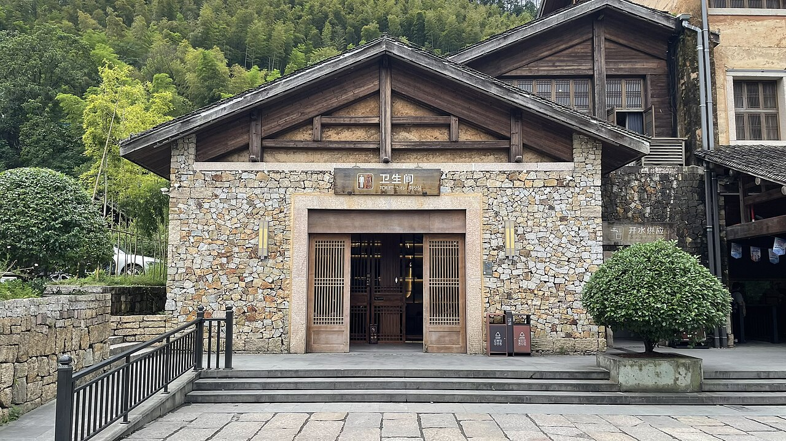
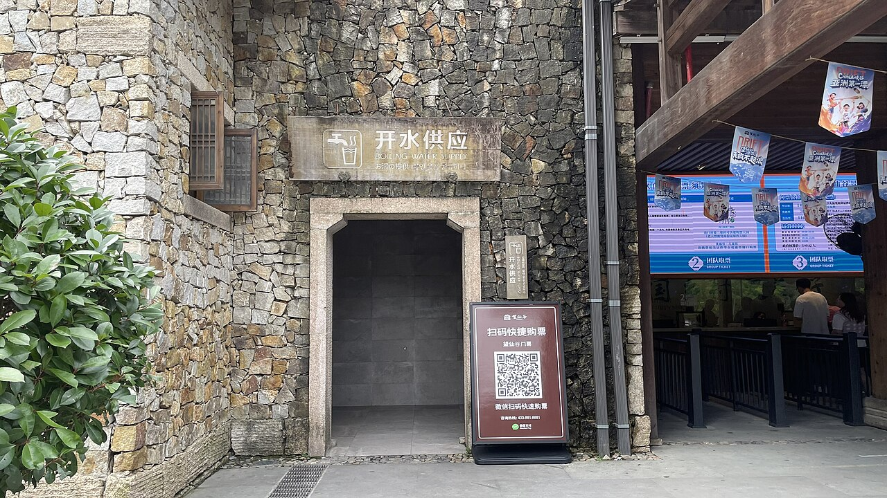
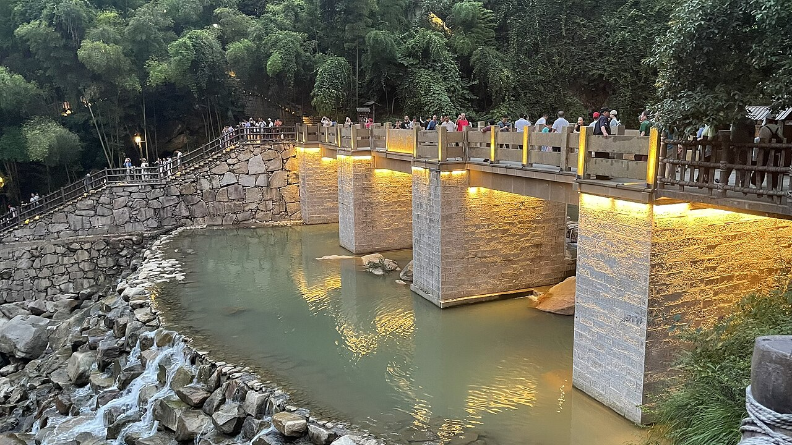
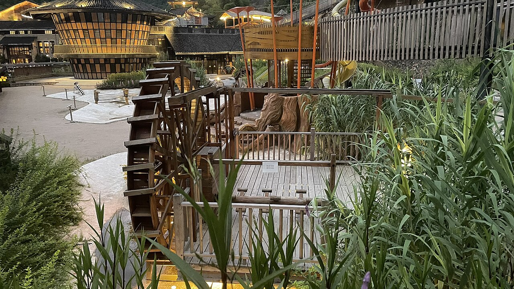

← 全部行程 · 行李勾选
往返高铁（同伴方案测算）约 ¥1,061/人G1602 + G635 · 以 12306 现图为准
住宿骨架金沙1 + 望仙谷1 + 篁岭1 + 景德2 + 牯岭1国庆房价另查
硬菜三清一天 + 望仙谷两段景德镇整天 · 庐山收尾
4 人粗算约 ¥2.4 万人均约 ¥5900 · 现查前参考
朋友圈会有的几张
三清、望仙谷、篁岭、窑厂巷子。望仙谷用的是 Wikimedia 公版，拍于 2025-07-19，白天和傍晚亮灯都有，不是国庆夜场实拍。庐山这页没有现成公版图，正文用文字点位。
照片都标了出处。望仙谷六张都是同一位作者 2025 年 7 月 19 日的公版，坐标落在上饶市广信区望仙谷景区。庐山本页无图。权利人认为侵权的，说一声立刻删。这页只给朋友看行程。
为什么这样排
同伴环线：上饶进、庐山站出，高铁加租车，四人，一路向西，不进南昌。自驾骨干是金沙 → 望仙谷 → 篁岭 → 景德镇 → 庐山。望仙谷留着：D2 傍晚夜游，D3 上午白天场，两套景。浮梁史子园茶山不拿来换它。换城放在午后；三清例外，默认赶早索道。景德镇连住两晚，整天不搬家。瑶里不进。比云南国庆机票稳——高铁时刻能提前锁。
三清山 · 住金沙脚 1 晚
 东方女神图源 Wikimedia Commons · xiquinhosilva / CC BY 2.0
东方女神图源 Wikimedia Commons · xiquinhosilva / CC BY 2.0
 巨蟒出山图源 Wikimedia Commons · Zhangzhugang / CC BY-SA 3.0
巨蟒出山图源 Wikimedia Commons · Zhangzhugang / CC BY-SA 3.0
 松和花岗岩图源 Wikimedia Commons · Zhangzhugang / CC BY-SA 3.0
松和花岗岩图源 Wikimedia Commons · Zhangzhugang / CC BY-SA 3.0
 崖壁图源 Wikimedia Commons · Zhangzhugang / CC BY-SA 3.0
崖壁图源 Wikimedia Commons · Zhangzhugang / CC BY-SA 3.0
 南清园峰林图源 Wikimedia Commons · Doctoroftcm / CC BY-SA 3.0
南清园峰林图源 Wikimedia Commons · Doctoroftcm / CC BY-SA 3.0
 栈道图源 Wikimedia Commons · Huangdan2060 / CC0
栈道图源 Wikimedia Commons · Huangdan2060 / CC0
 西海岸图源 Wikimedia Commons · Zhangzhugang / CC BY-SA 3.0
西海岸图源 Wikimedia Commons · Zhangzhugang / CC BY-SA 3.0
 西海岸峰林图源 Wikimedia Commons · Zhangzhugang / CC BY-SA 3.0
西海岸峰林图源 Wikimedia Commons · Zhangzhugang / CC BY-SA 3.0
 云雾图源 Wikimedia Commons · Huangdan2060 / CC0
云雾图源 Wikimedia Commons · Huangdan2060 / CC0
 索道图源 Wikimedia Commons · Zhangzhugang / CC BY-SA 3.0
索道图源 Wikimedia Commons · Zhangzhugang / CC BY-SA 3.0
卖点在南清园。金沙索道上，港首索道下，下山不跟金沙的人挤。门票约 ¥190，金沙索道往返约 ¥125，现查前参考。东方女神、巨蟒出山看完，上午走阳光海岸，下午三清宫，再下山。西海岸大约 4 公里栈道，大部分平。一线天 299 级，有腿再下。同伴默认 07:40 到索道口排队。国庆首班大约 07:30，早一波能少排 1–2 小时。住脚下是为了赶上这班，不是为了睡到 10 点。
体力备选：不想走 5–6 小时，改「港首轻徒步」。三清宫、郁松林、猴王观宝，缓坡栈道，大约 3 小时。10:00 上，13:00 下，下午转望仙谷更从容。
景点解说
-
▸金沙上、港首下
三清这天住在金沙索道脚下，是为了赶上早班，不是为了睡到十点。同伴默认七点四十到索道口排队。国庆首班大约七点半，早到一波，能少排一到两小时。上山走金沙，下山走港首，免得跟上山的人挤同一条路。门票大约一百九十元，金沙索道往返大约一百二十五元，都是现查前参考，买之前再对一遍。
这段音频没加载出来，先看文字。
-
▸南清园先看完
卖点在南清园。上山先看巨蟒出山和东方女神，玉女开怀在同一片栈道上，别只停一个机位。巨蟒是一根竖着的花岗岩石柱，女神在侧面，远看像一张侧脸。这段以栈道为主，大约两小时。风大就抓栏杆，别倒退着拍照。这两处看完，上午的硬菜就算齐了。
这段音频没加载出来，先看文字。
-
▸一天怎么走
南清园之后走阳光海岸，海拔大约一千六百米，云海看运气。中午在山上简餐，日上餐厅、梯云岭食堂能填肚子，想省时间就自带干粮。下午到三清宫，三点左右从港首索道下山取车，再开望仙谷。西海岸大约四公里，栈道大部分平。一线天两百九十九级，腿还行再下。不想走五到六小时，改港首轻徒步：十点上、一点下，三清宫、郁松林、猴王观宝，缓坡大约三小时。
这段音频没加载出来，先看文字。
-
▸别耗在索道上
风大的时候索道会减速，甚至停运。停了就下山，别在山上耗到末班。雨衣比伞好用，栈道一湿就滑，穿防滑鞋。国庆别信随到随上。体力不够就走轻徒步，别硬把西海岸和一线天叠在同一天。下山晚了，望仙谷夜游也会被挤短。
这段音频没加载出来，先看文字。
-
▸拍这几张就够
东方女神的侧脸、巨蟒出山的石柱、南清园的松和花岗岩、西海岸的峰林，这几张够用。云来了就拍层次，别死等完美云海。栈道可以入镜，人站在栏杆内侧。索道车厢里往下看，是金沙方向的山，别只拍自己的鞋。
这段音频没加载出来，先看文字。
语音由 Microsoft Edge 免费神经网络音色合成（edge-tts）。
望仙谷 · 夜游一晚 + 第二天白天
白天峡谷File: Wangxiangu Scenic Area - 01。图源 Wikimedia Commons · 茅野ふたば / CC BY-SA 4.0

瀑布上午。File: Wangxiangu Scenic Area - 02。图源 Wikimedia Commons · 茅野ふたば / CC BY-SA 4.0

崖壁房子白鹤崖一带。File: Wangxiangu Scenic Area - 03。图源 Wikimedia Commons · 茅野ふたば / CC BY-SA 4.0

街区灯笼19:10 左右，天还没全黑。File: Wangxiangu Scenic Area - 22。图源 Wikimedia Commons · 茅野ふたば / CC BY-SA 4.0
瀑布亮灯夜游看的就是这个。File: Wangxiangu Scenic Area - 28。图源 Wikimedia Commons · 茅野ふたば / CC BY-SA 4.0

崖壁入夜File: Wangxiangu Scenic Area - 40。图源 Wikimedia Commons · 茅野ふたば / CC BY-SA 4.0
夜游是主菜，白天峡谷是另一套。票约 ¥140，大约 9:30 开到 23:00，现查前参考。D2 三清下来开车约 50km / 1h，住景区内街区民宿（仙宿一类，同伴按约 ¥500/晚估）。白鹤崖悬崖民宿官方大约 ¥5000–6800/晚，两间过万，不住。住街区才能多次进出，夜游不用再赶夜路。D3 上午慢慢逛峡谷、瀑布、玻璃栈道、白鹤崖，中午再走。
景点解说
-
▸夜游加白天
望仙谷留着，不拿浮梁史子园茶山换。夜游是主菜，白天的峡谷是另一套。票大约一百四十元，大约九点半开到晚上十一点，现查前参考。三清下来开车大约五十公里、一小时，傍晚住进景区。晚上看灯，第二天上午再逛山，中午才走。葛仙村也是灯光夜景，这趟只留这一处。
这段音频没加载出来，先看文字。
-
▸晚上看灯
晚上大约七点半进。看瀑布上的彩色灯、崖壁上的房子、街区的灯笼，不是深夜一场大演出。页上的夜景图拍于二零二五年七月十九日傍晚，灯刚亮，别拿那个亮度要求国庆夜场。园区开到大约十一点。人住在景区里，看完不用再开夜路。玻璃栈道留给明天白天。
这段音频没加载出来，先看文字。
-
▸第二天上午是山
第二天九点半再进。峡谷、瀑布、悬崖上的民宿群、玻璃栈道、白鹤崖，昨晚是灯，今早是山。不赶，十二点退房吃饭。怕高的人玻璃栈道绕开。白天的瀑布没有彩灯，水本身够看。白鹤崖的房子适合拍照，不适合按那个价住进去。
这段音频没加载出来，先看文字。
-
▸住街区，不住悬崖
住景区内的街区民宿，仙宿一类。同伴按大约五百元一晚估，国庆价现查。住在街区才能多次进出，夜游完不用再赶夜路。白鹤崖悬崖民宿官方大约五千到六千八百元一晚，开两间就过万，不住。别被崖壁上的照片说服下单。
这段音频没加载出来，先看文字。
-
▸白天和傍晚各一张
白天拍峡谷、沿河的房子、瀑布和白鹤崖。傍晚灯笼街天还没全黑时最好拍，全黑以后多半是光斑。瀑布亮灯是夜游那一张，人站在水的侧面，别开闪光灯。页上白天和入夜的照片都是同一位作者七月拍的公版，构图可以参考，光线别照抄。
这段音频没加载出来，先看文字。
语音由 Microsoft Edge 免费神经网络音色合成（edge-tts）。
篁岭 · 山上 1 晚
 屋顶竹匾图源 Wikimedia Commons · EditQ / CC BY-SA 4.0
屋顶竹匾图源 Wikimedia Commons · EditQ / CC BY-SA 4.0
 辣椒和玉米图源 Wikimedia Commons · EditQ / CC BY-SA 4.0
辣椒和玉米图源 Wikimedia Commons · EditQ / CC BY-SA 4.0
 村子俯瞰图源 Wikimedia Commons · Leungcwd / CC BY-SA 4.0
村子俯瞰图源 Wikimedia Commons · Leungcwd / CC BY-SA 4.0
 晨雾晒秋图源 篁岭景区官网 wyhl.cc
晨雾晒秋图源 篁岭景区官网 wyhl.cc
 村子图源 Wikimedia Commons · 沈澄心 / CC0
村子图源 Wikimedia Commons · 沈澄心 / CC0
 辣椒匾近看图源 篁岭景区官网 wyhl.cc
辣椒匾近看图源 篁岭景区官网 wyhl.cc
 十月的村图源 Wikimedia Commons · 沈澄心 / CC0
十月的村图源 Wikimedia Commons · 沈澄心 / CC0
 屋脊图源 Wikimedia Commons · 沈澄心 / CC0
屋脊图源 Wikimedia Commons · 沈澄心 / CC0
 巷子图源 Wikimedia Commons · 沈澄心 / CC0
巷子图源 Wikimedia Commons · 沈澄心 / CC0
 梯田方向图源 Wikimedia Commons · 沈澄心 / CC0
梯田方向图源 Wikimedia Commons · 沈澄心 / CC0
十月看晒秋。屋顶辣椒、玉米，也有菊花。票+双程索道约 ¥145。只住山上 1 晚：D3 下午到，傍晚天街、晒工坊、垒心桥；D4 早起拍晨雾，下午去景德镇。天街偏商业，台阶多。10 月初秋色刚起头，不是满山红。篁岭不在婺源通票里，别买通票。
景点解说
-
▸只住山上一晚
十月来篁岭，看的是晒秋。只住山上一个晚上：第三天下午到，傍晚走天街、晒工坊、垒心桥；第四天早起拍晨雾，下午去景德镇。票加往返索道大约一百四十五元，现查前参考。篁岭不在婺源通票里，通票别买。从望仙谷过来大约一百五十公里、两个半小时，是这趟最长的一段路。
这段音频没加载出来，先看文字。
-
▸晒秋不是满山红
屋顶上晒辣椒和玉米，竹匾铺开，也有菊花。十月初秋色刚起头，不是满山红，别按宣传片里的红叶来。村子是徽派房子叠在坡上，从高处看下来，比钻进巷子更像那张经典图。梯田方向这个月是稻田，不是油菜花。江岭不用去。
这段音频没加载出来，先看文字。
-
▸傍晚走，早晨拍
索道上山。傍晚五点到七点光线好，天街、晒工坊、垒心桥走一圈就够。天街偏商业，台阶多，梯田不用走完。第二天七点起，五桂堂推窗、摄影吧露台、晒秋观景台、垒心桥的玻璃栈道、晒工坊，这才是住山上的理由。一点前下山取车，国庆索道下山会排队。
这段音频没加载出来，先看文字。
-
▸通票、台阶、吃饭
李坑、江湾、汪口跟篁岭重复，不去。天街吃饭将就：荷包红鲤、糊豆腐、粉蒸菜、篁岭汽糕能点，也有预制菜、先付后吃的差评，不当美食。台阶多，带老人小孩别贪全村。十月叶子刚转，失望多半是还没红，不是走错了路。
这段音频没加载出来，先看文字。
-
▸四张图就够
屋顶竹匾、辣椒和玉米的近景、村子俯瞰、晨雾里的晒秋，四张够发。晨雾靠住在山上，不住就别指望早上七点的雾。垒心桥往下拍匾，人让开栏杆。巷子和屋脊当配角。早晨别耗在天街的店招前面，晒秋观景台更干净。
这段音频没加载出来，先看文字。
语音由 Microsoft Edge 免费神经网络音色合成（edge-tts）。
景德镇 · 连住 2 晚
 窑厂巷子氛围参考。图源本地行程图库
窑厂巷子氛围参考。图源本地行程图库
 拱门图源本地行程图库
拱门图源本地行程图库
 窑图源本地行程图库
窑图源本地行程图库
 院子图源本地行程图库
院子图源本地行程图库
 古县衙 · 加项不当这天主菜。图源 Wikimedia Commons · Yumeto / CC BY-SA 4.0
古县衙 · 加项不当这天主菜。图源 Wikimedia Commons · Yumeto / CC BY-SA 4.0
 大堂 · 加项图源 Wikimedia Commons · Zhangzhugang / CC BY-SA 3.0
大堂 · 加项图源 Wikimedia Commons · Zhangzhugang / CC BY-SA 3.0
陶溪川附近连住两晚，行李放着。D4 晚上看陶溪川夜景。D5 整天不搬家：三宝国际陶艺村（东郊大约 30 分钟）、中国陶瓷博物馆（免费，要预约）、御窑厂遗址和御窑博物馆。有余力再加古窑民俗博览区，或浮梁古县衙看一眼。史子园茶山不排。瑶里单程 1.5 小时，这天不换。陶瓷馆和御窑本页没有公版现场图，上面窑厂是氛围，县衙是加项。
景点解说
-
▸连住两晚
景德镇住陶溪川附近，连住两晚，行李一次放好。第四天傍晚到，晚上看夜景；第五天整天不搬家，也不退房。瑶里单程大约一个半小时，这天不换。史子园茶山不排。觉得安排太空，就睡觉、逛街，别临时再加一座古镇。
这段音频没加载出来，先看文字。
-
▸三宝陶艺村
第五天上午去三宝国际陶艺村。在东郊，开车大约三十分钟，山谷里一间间工作室，看拉坯、看院子，大约一个半小时，不是逛商场。门口有人推销所谓大师瓷，标价和出处对不上就走。本页没有三宝的现场公版图，尺度跟页上的窑厂巷子接近，别把氛围图当成村口实拍。
这段音频没加载出来，先看文字。
-
▸陶瓷博物馆
中午回市区，去中国陶瓷博物馆。免费，必须提前预约，馆内大约两小时。按朝代看瓷，别指望每件都能拍照，现场规定现查。这是当天的主菜之一，跟买一只杯子不是一回事。本页没有展厅公版图。页上的窑是氛围，不是博物馆里面。
这段音频没加载出来，先看文字。
-
▸御窑遗址
下午去御窑厂国家考古遗址公园，连着御窑博物馆，大约两小时。看的是官窑挖出来的窑和残片，不是一条买杯子的街。跟陶瓷博物馆安排在同一天下午，就不用再跨一次城。票价现查，别按旧攻略里的数字付钱。
这段音频没加载出来，先看文字。
-
▸陶溪川夜景
第四天晚上大约七点半看陶溪川。老瓷厂、红砖烟囱，夜景够用，不用排成第二个博物馆。婺女洲打铁花在婺源县城，人已经住在景德镇，当晚去不成。第二天若还有力气，可以再回来坐一会。冷粉、饺子粑、碱水粑这些在市区解决，别把窑厂门口当正餐。
这段音频没加载出来，先看文字。
-
▸加项和别买的
有余力再加古窑民俗博览区，票大约九十五元，现查前参考；或者去浮梁古县衙看一眼。县衙不当这天的主菜，页上的县衙照片是加项。瑶里不去。门口拉你做壶、卖大师瓷的，直接走。古窑若加，就放在御窑后面。
这段音频没加载出来，先看文字。
语音由 Microsoft Edge 免费神经网络音色合成（edge-tts）。
庐山 · 住牯岭 1 晚（无图，文字点位）
国庆核心区禁自驾上山，车停换乘中心，再乘观光车或交通索道。上山前可在温泉镇停东林大佛（免费）和泡汤，泳衣自带。西线轻松：如琴湖–花径–锦绣谷–仙人洞，天黑前走完。第二天美庐 / 会议旧址 / 芦林湖 / 含鄱口，平路接驳，不强制 5:30 日出。三叠泉别碰——往返大约 3 小时台阶，国庆还限流。红叶未到季，10 月初别指望满山红。门票约 ¥160，观光车另计；交通索道往返约 ¥120，可选。现查前参考。
景点解说
-
▸车停山下
国庆从十月一日到八日，庐山核心区禁自驾。车停在换乘中心，再乘观光车，或者坐交通索道。门票大约一百六十元，观光车另计。交通索道往返大约一百二十元，可坐可不坐。这些都是现查前参考。门票、观光车和车辆进山，在一机游庐山里约，提前大约三天放票，售罄即止。别赌开车冲进核心区。
这段音频没加载出来，先看文字。
-
▸下午只走西线
第一天若下午才上山，走西线就够：如琴湖、花径、锦绣谷、仙人洞。下坡栈道，大约两小时。十月初大约六点一刻前天黑，别把这段排到晚上。这页没有庐山的公版图，点位靠文字认。锦绣谷是贴着峭壁的步道，仙人洞在西线的末端。
这段音频没加载出来，先看文字。
-
▸第二天不追日出
住牯岭一个晚上。第二天不把五点半日出当成默认。美庐、庐山会议旧址、芦林湖、含鄱口，观光车接驳，下车再走一小段。对旧房子没兴趣，就改成远看五老峰，加上植物园。十二点前下山，行李随身带走，车在山下。想看日出可以五点半去含鄱口，那是加项，不是行程表上的必须。
这段音频没加载出来，先看文字。
-
▸三叠泉别碰
三叠泉别碰。来回大约三小时台阶，国庆还限流，一下午就没了，还车和高铁都会紧。红叶这个时候还没到季，十月初别指望满山红，要到下旬。泡完温泉别穿着湿衣服上山，下午山上大约十五度。还车若迟到，改乘晚一班，别硬挤十六点十四分的那趟。
这段音频没加载出来，先看文字。
-
▸大佛和泡汤
进山前可以在温泉镇停东林大佛。免费，大约早上八点到下午五点。露天铜像大约四十八米，几乎不用走路，停一小时够了。泡汤是可选项：醉石大约五十五元起，汤太宗大约一百六十八元，天沐下午两点才开门，别去早了。泳衣泳帽自己带。不想停，就直接去换乘中心。价钱现查。
这段音频没加载出来，先看文字。
语音由 Microsoft Edge 免费神经网络音色合成（edge-tts）。
砍掉的 / 没排进去的
浮梁史子园茶山
不当主行程。十月叶子还绿，不拿它替换望仙谷。
婺女洲打铁花
夜场在婺源县城。D4 晚上已经住景德镇，去不成。
葛仙村
跟望仙谷都是夜景灯光，留望仙谷。
李坑 / 江湾 / 汪口
跟篁岭重复。只玩篁岭，别买婺源通票。
江岭
油菜花在三四月。十月是稻田。
瑶里
单程 1.5 小时，会吃掉景德镇轻松日。近处三宝村大约 30 分钟。
南昌
本版不进。庐山站有直达深圳北，不必绕。
武功山 / 龟峰 / 龙虎山
七天再塞一座山，方向或体力都对不上。
三叠泉
别碰。台阶长，国庆限流。
白鹤崖悬崖民宿
官方大约 ¥5000–6800/晚。住街区，不住崖上。
季节提醒
10 月初秋色刚起头。庐山红叶要到下旬。
高铁 + 租车怎么走
数字标「同伴方案测算 / 现查前参考」。高铁以 12306 现图为准，房以国庆价为准。抢票：9.17 去程 / 9.23 返程，以实际开售为准。
| 日期 | 车次 / 路段 | 时刻 / 距离 | 人均或预算 | 备注 |
|---|
| 10.01 | G1602 深圳北 → 上饶 | 09:21–15:59 | 约 ¥539 | 备选 G636，经南昌西中转，要搬行李 |
| 站内/附近取车 → 三清山金沙索道口，约 70km / 1.5h。当晚不上山。 |
| 租车 | SUV · 约 6 天 | 上饶取 / 庐山站还 | 约 ¥450/天 | 异地还车预算约 ¥600；油+过路约 ¥700 |
| 国庆高速免费，服务区挤。门票粗算人均约 ¥800（三清约 ¥315、望仙谷 ¥140、篁岭 ¥145、庐山约 ¥240）。四人合计约 ¥2.4 万，人均约 ¥5900。 |
| 10.07 | G635 庐山站 → 深圳北 | 16:14–20:57 | 约 ¥522 | 备选 G2793，17:18–22:14 |
| 12:00 前下山取车 → 庐山站还车 → 上高铁。两趟都抢，下山晚了还有一小时余量。 |
自驾骨干：金沙 → 望仙谷（约 50km / 1h）→ 篁岭（约 150km / 2.5h）→ 景德镇（约 60km / 1h，月亮湾、思溪延村顺路可选）→ 庐山方向约 230km / 3h。
D1 · 10.01 周四
上饶取车 → 金沙脚
当晚不上山
索道方向图源 Wikimedia Commons · Zhangzhugang / CC BY-SA 3.0
金沙那边的山图源 Wikimedia Commons · Zhangzhugang / CC BY-SA 3.0
 云图源本地行程图库 / Commons 素材
云图源本地行程图库 / Commons 素材
 崖图源 Wikimedia Commons · Huangdan2060 / CC0
崖图源 Wikimedia Commons · Huangdan2060 / CC0
吃山下农家菜将就。石鸡、笋干烧肉、小河鱼、清明果，别指望馆子。
住 · 金沙索道脚 1 晚紧挨索道。不开山顶房。明天 07:40 排队靠这个。
避坑国庆服务区挤。油和补给别拖到下山再想。
D2 · 10.02 周五
三清全天 → 傍晚望仙谷
金沙上 · 港首下 · 夜游
东方女神图源 Wikimedia Commons · xiquinhosilva / CC BY 2.0
巨蟒出山图源 Wikimedia Commons · Zhangzhugang / CC BY-SA 3.0
南清园图源 Wikimedia Commons · Doctoroftcm / CC BY-SA 3.0
西海岸图源 Wikimedia Commons · Zhangzhugang / CC BY-SA 3.0
望仙谷夜游图源 Wikimedia Commons · 茅野ふたば / CC BY-SA 4.0
瀑布亮灯图源 Wikimedia Commons · 茅野ふたば / CC BY-SA 4.0
崖壁夜景图源 Wikimedia Commons · 茅野ふたば / CC BY-SA 4.0
栈道图源 Wikimedia Commons · Huangdan2060 / CC0
早餐后到金沙索道口排队。08:00 左右上山。这是默认，不是懒觉版。
南清园：巨蟒出山、东方女神、玉女开怀。栈道为主，大约 2 小时。
阳光海岸。海拔大约 1600 米，看云海。
山上简餐。日上餐厅、梯云岭食堂能填肚子。想省时间就自带干粮。
三清宫。15:00 港首索道下山，取车。
开望仙谷，约 50km / 1h。17:00 住景区内街区。
夜游灯光。票约 ¥140，开放到大约 23:00。白天留到明天上午。
体力不够走 6 小时：港首轻徒步，10:00 上、13:00 下。三清宫、郁松林、猴王观宝。
住 · 望仙谷景区内街区 1 晚不是白鹤崖悬崖房。夜游完不用再开夜路。
避坑风大索道会减速或停。停了就下山，别耗到末班。防滑鞋，雨衣比伞好。悬崖民宿别下单。
D3 · 10.03 周六
望仙谷白天 → 篁岭
上午峡谷 · 下午转场
白天峡谷图源 Wikimedia Commons · 茅野ふたば / CC BY-SA 4.0
瀑布图源 Wikimedia Commons · 茅野ふたば / CC BY-SA 4.0
崖壁房子图源 Wikimedia Commons · 茅野ふたば / CC BY-SA 4.0
下午到篁岭图源 Wikimedia Commons · Leungcwd / CC BY-SA 4.0
晒秋图源 Wikimedia Commons · EditQ / CC BY-SA 4.0
村子图源 Wikimedia Commons · 沈澄心 / CC0
屋顶图源 Wikimedia Commons · EditQ / CC BY-SA 4.0
巷子图源 Wikimedia Commons · 沈澄心 / CC0
望仙谷白天场。峡谷、瀑布、悬崖民宿群、玻璃栈道、白鹤崖。昨晚是灯，今早是山。不赶。
退房，午饭。
去篁岭，约 150km / 2.5h。这是全程最长的一段。县城可歇脚。
到篁岭，索道上山。票+双程索道约 ¥145。别买婺源通票。
天街、晒工坊、垒心桥。17–19 点光线好。台阶多，梯田不走完。
吃天街农家菜将就。荷包红鲤鱼、糊豆腐、粉蒸菜、篁岭汽糕。有预制菜、先付后吃的差评，不当美食。
住 · 篁岭山上 1 晚晒秋美宿 / 天街酒店一类。明早晨雾靠这一晚，不住两晚。
避坑李坑、江湾、汪口不去。江岭十月没有油菜花。
D4 · 10.04 周日
篁岭晨雾 → 景德镇连住
下午转场 · 连住 2 晚
晨雾住山上才赶得上。图源 篁岭景区官网 wyhl.cc
辣椒匾图源 篁岭景区官网 wyhl.cc
 十月图源 Wikimedia Commons · 沈澄心 / CC0
十月图源 Wikimedia Commons · 沈澄心 / CC0
 屋面图源 Wikimedia Commons · 沈澄心 / CC0
晚上到陶溪川一带窑厂氛围
窑厂拱门
屋面图源 Wikimedia Commons · 沈澄心 / CC0
晚上到陶溪川一带窑厂氛围
窑厂拱门
 小黄鱼参考图源 携程 图味美小黄鱼浙江路店
小黄鱼参考图源 携程 图味美小黄鱼浙江路店
 浙江路店门口图源 携程 图味美小黄鱼浙江路店
浙江路店门口图源 携程 图味美小黄鱼浙江路店
早起拍晨雾。五桂堂推窗、摄影吧露台、晒秋观景台、垒心桥（玻璃栈道）、晒工坊。这是住山上的理由。
索道下山取车。国庆下山会排队，尽量这个点前下来。
月亮湾顺路，免费，大约 20 分钟。晨雾轮不到它，斜阳下的河湾将就。
思溪延村可选。约 ¥27.5，1 小时。累了就跳过。察关村在北边，要绕，不去。
景德镇市区，陶溪川附近。连住 2 晚，行李一次放好。
陶溪川夜景。老瓷厂、红砖烟囱。婺女洲打铁花在婺源县城，今晚去不成。
吃冷粉、饺子粑、碱水粑、油炸粿、瓷泥煨鸡。图味美小黄鱼一类可查现分。别把窑厂门口当正餐。
住 · 景德镇第 1 晚陶溪川附近。店名等国庆房价再定。明早不用搬。
D5 · 10.05 周一
景德镇整天 · 不搬家
三宝 / 陶瓷馆 / 御窑
窑厂院子陶瓷馆和御窑本页无现场公版图
窑氛围，不是博物馆展厅
巷子三宝村、陶溪川都是这种尺度
拱门
县衙 · 可加可不加图源 Wikimedia Commons · Yumeto / CC BY-SA 4.0
 院子图源 Wikimedia Commons · Zhangzhugang / CC BY-SA 3.0
院子图源 Wikimedia Commons · Zhangzhugang / CC BY-SA 3.0
 黄豆茄子图源 携程 图味美小黄鱼浙江路店
黄豆茄子图源 携程 图味美小黄鱼浙江路店
 店里图源 携程 图味美小黄鱼浙江路店
店里图源 携程 图味美小黄鱼浙江路店
自然醒。不退房，不搬行李。
三宝国际陶艺村。东郊大约 30 分钟，山谷里看工作室，大约 1.5 小时。
中国陶瓷博物馆。免费，提前预约，大约 2 小时。
御窑厂国家考古遗址公园 + 御窑博物馆。大约 2 小时。
有余力再加古窑民俗博览区（约 ¥95），或浮梁古县衙看一眼。茶山不排。陶溪川昨晚逛过，可以再坐坐。
住 · 景德镇第 2 晚同一家。今晚收行李，明早 08:00 直接去庐山。
避坑门口别买「大师瓷」。瑶里不去。觉得太空，就睡觉逛街，别临时加一座古镇。
D6 · 10.06 周二
景德镇 → 庐山牯岭
东林大佛 / 温泉可选 · 西线
出发。去庐山约 230km / 3h。今天早走，换山上多半天。
温泉镇，东林大佛。免费，大约 8:00–17:00，停 1 小时。48 米露天铜像，几乎不走路。不想停就直奔换乘中心。
泡温泉大约 1.5 小时，可选。醉石 ¥55 起，汤太宗 ¥168。天沐 14:00 才开门，别去早了。泳衣泳帽自带。泡完换干衣服再上山，下午山上大约 15℃。
换乘中心停车。国庆 10.1–10.8 核心区禁自驾。观光车或交通索道上山。门票和「车辆进山」要提前约。
西线：如琴湖 → 花径 → 锦绣谷 → 仙人洞。下坡栈道，大约 2 小时。18:15 前结束，10 月初这个点天黑。
住 · 牯岭 1 晚山上房紧。门票 + 观光车在「一机游庐山」约，提前大约 3 天开，售罄即止。
避坑别赌自驾冲核心区。红叶未到季。三叠泉这趟别碰。泡完别穿着湿衣服上山。
庐山本页无现成公版图，点位用文字。要图去小红书搜锦绣谷、含鄱口、美庐、东林大佛。
D7 · 10.07 周三
庐山收尾 → 庐山站回深圳
不强制日出 · 12:00 前下山
早餐。想看日出可 05:30 去含鄱口，不默认。先退房，行李寄前台——车在山下，行李得随身带下去。
美庐 → 庐山会议旧址 → 芦林湖 → 含鄱口。观光车接驳，下车走一小段。对人文没兴趣，可换五老峰远观 + 植物园。三叠泉别碰。
取行李，乘观光车下山。国庆常排队，务必这个点前下。
山下取车，去庐山站，约 45km / 1h。15:00 还车。先确认网点在庐山站或九江，问清异地还车费。
G635 庐山站 → 深圳北 20:57。约 ¥522。备选 G2793，17:18–22:14。两趟都抢。
午饭山上或山下随便吃。别在三叠泉耗下午。
避坑还车迟到会吃掉高铁缓冲。下山晚了改 G2793，别硬挤 16:14。
还没订
望仙谷景区内街区民宿 1 晚 + 篁岭山上 1 晚 + 庐山牯岭 1 晚（这三处先订）
金沙索道脚 1 晚；景德镇陶溪川附近 2 晚
上饶取 / 庐山站还 · SUV 约 6 天，先问异地还车费
9.17 前后抢去程 G1602（备选 G636），以 12306 开售为准
9.23 前后抢返程 G635 和 G2793，两趟都抢
9.28 前后约庐山门票、观光车、「车辆进山」（一机游庐山）
三清、望仙谷、篁岭门票；陶瓷博物馆免费预约。县衙可不定
避坑摘要
望仙谷留着。茶山不排。县衙只是景德镇那天的一句加项。
三清默认 07:40 排队，金沙上、港首下。不想走长的，10:00 港首轻徒步。
含鄱口 5:30 不是默认。住望仙谷街区，不住悬崖天价房。
10 月初秋色刚起头。庐山红叶未到季。
国庆庐山核心区禁自驾，车停换乘中心。D6 泡温泉自带泳衣。
三叠泉别碰。瑶里、南昌不进。只玩篁岭，别买婺源通票。